AI 是怎麼看你的圖的
把圖丟進來,看看 vision encoder 拿到的是什麼樣子。
或把圖片拖到這裡
這四格是什麼意思?
1. Original: 你看到的原圖。
2. Resized to 224×224: ViT 的標準輸入尺寸。任何高解析度的圖在這一步先被縮小。如果你的原圖是 4000×4000,光這一步就丟掉了 99% 以上的像素。
3. 16×16 patch average: ViT 把圖切成 14×14 = 196 塊,每塊取顏色平均。這是「空間細節」的死亡——筆觸、紋理、表情、細微漸層全部在這一步消失。
4. Semantic collapse: 模擬 CLIP 風格的特徵壓縮。像素被量化到 8 種主要顏色,每塊再 snap 到最接近的那種。這大致就是 vision encoder 餵給 LLM 的特徵保留量——能告訴你「畫面有什麼」,但「畫得好不好看」不在這份資料裡。
為什麼會這樣設計?
多模態 LLM (Claude, GPT-4V, Gemini 等) 雖然「看得到圖」,但它們不是真的「看」——它們前面有一條 vision encoder pipeline 把圖翻譯成 token 序列,再餵給語言模型。

這個翻譯過程是高度有損的。CLIP 這類 encoder 學的是「圖跟文字描述對不對得起來」,所以保留下來的是「物件、場景、構圖」這類粗略語意,不是「色彩處理、筆觸節奏、邊緣呼吸感」這類美學細節。
這個工具讓你直觀看到那個損失。如果你的 AI 助手對某張圖的反應很怪 (誤判 NSFW、看不懂美感、認錯內容),很可能不是它「不夠努力」,而是它拿到的就是第三、四格那種品質的資料。